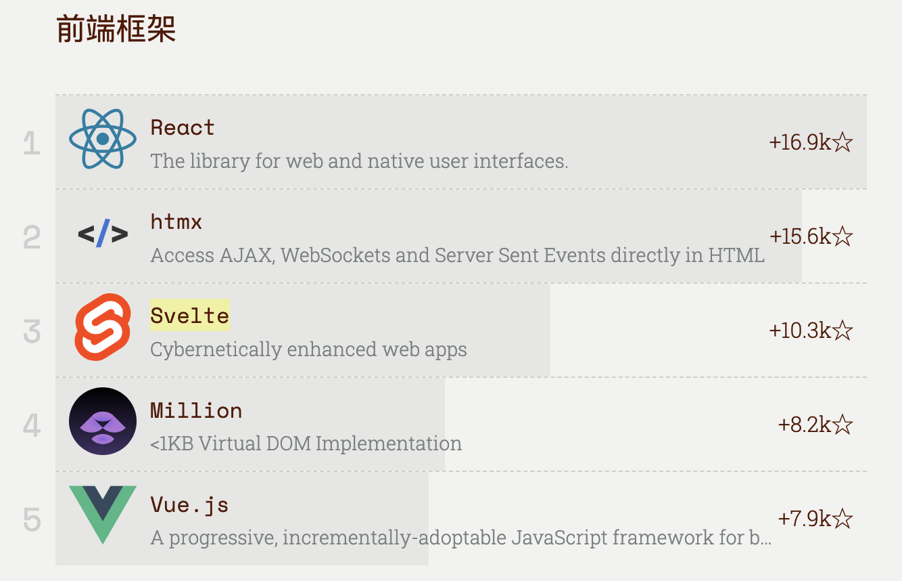

现代前端框架对比：React、Svelte、HTMX、Million.js 和 Vue 深度解析
随着前端技术的快速发展，各种现代前端框架和库相继问世，每个框架都在不同的开发需求和场景下提供了独特的解决方案。如何选择适合自己项目的前端框架，成为开发者面临的一大挑战。本文将深入对比 React、Svelte、HTMX、Million.js 和 Vue 这五大主流框架，从特性、优势、适用场景等方面进行深度解析，并附带实际的代码示例，帮助你在具体项目中做出最佳选择。

1. React：组件化驱动的灵活选择
特性
- 组件化结构：React 是一个基于组件的 UI 构建库。每个组件有自己的状态（state）和生命周期，可以重用和组合。
- 虚拟 DOM：React 使用虚拟 DOM 来减少与真实 DOM 的交互，从而提升性能。
- 丰富的生态系统：React 拥有庞大的生态系统和第三方库，像 React Router、Redux、Next.js 等都为 React 提供了强大的支持。
优势
- 成熟稳定：React 是目前最流行的前端框架之一，已经在多个大型项目中得到验证（如 Facebook、Instagram）。
- 灵活性高：React 允许开发者自由选择技术栈，不强制使用特定的工具，适合构建从小型到企业级的各种应用。
- 社区支持：React 拥有庞大的开发者社区，提供了丰富的插件、工具和教程。
适用场景
- 复杂的单页应用（SPA）
- 需要高度灵活性和可扩展性的企业级项目
代码示例：React 使用
假设你需要开发一个简单的任务管理应用，可以使用 React 的组件化结构进行开发。
1 | import React, { useState } from 'react'; |
2. Svelte：编译时优化的轻量级框架
特性
- 编译时优化：Svelte 在编译时将应用程序转换为高效的 JavaScript 代码，而不是依赖虚拟 DOM。
- 反应式编程：Svelte 提供了内建的反应式机制，数据变化自动反应到 UI。
- 小巧的打包体积：Svelte 编译后的代码通常比 React 和 Vue 小很多，适合做高性能应用。
优势
- 更高的性能：由于没有虚拟 DOM，Svelte 的渲染速度比 React 和 Vue 更快，适用于实时数据更新的应用。
- 开发体验好：反应式编程的设计让开发者可以更轻松地处理 UI 更新，无需编写大量的 JavaScript 代码。
- 小巧的打包体积：Svelte 的输出代码非常小，非常适合移动端和低带宽环境。
适用场景
- 高性能需求的应用：例如实时数据展示、复杂动画等。
- 小型到中型项目：适合快速开发和迭代。
代码示例：Svelte 使用
假设你需要开发一个实时股票行情应用，Svelte 的反应式特性可以让你轻松处理数据变化。
1 | <script> |
3. HTMX：无缝集成 HTML 与服务器
特性
- HTML 驱动的动态行为：通过在 HTML 元素中添加属性，HTMX 使得 HTML 元素能够处理 AJAX 请求、WebSockets、局部更新等。
- 无 JavaScript 必须依赖：HTMX 允许你不写 JavaScript 代码即可实现复杂的交互行为。
- 与后端紧密集成：适用于传统的多页应用（MPA），可以简化前端和后端的交互。
优势
- 简化开发流程：开发者无需编写 JavaScript 代码，只需通过 HTML 属性控制动态行为，减少了前端开发的复杂度。
- 高效与后端集成：HTMX 能通过与后端 API 的直接交互，快速响应数据更新。
- 轻量级：HTMX 是一个小巧的库，不需要庞大的框架支持。
适用场景
- 传统的多页应用（MPA）
- 快速开发动态功能而不引入复杂前端框架
代码示例：HTMX 使用
假设你需要实现一个动态加载任务列表的功能，HTMX 可以通过 HTML 属性实现：
1 | <div id="task-list"> |
上面的代码会让点击按钮后，通过 HTMX 发起 GET 请求加载任务列表，而无需编写任何 JavaScript。
4. Million.js：优化 React 渲染性能
特性
- 虚拟 DOM 引擎优化：Million.js 是一个虚拟 DOM 引擎优化库，专为提升 React 渲染性能设计，尤其在处理大量数据或频繁更新时，性能提升显著。
- 高效列表渲染：Million.js 对大规模列表的渲染进行了优化，减少不必要的重渲染。
优势
- 提高渲染效率：通过优化 React 的虚拟 DOM 渲染，Million.js 可以大大提升渲染大量数据时的性能。
- 与现有框架兼容：Million.js 可以直接与 React 集成，开发者无需重构现有的项目结构。
适用场景
- 需要频繁渲染大量数据的应用：如实时监控、大数据展示等。
5. Vue：渐进式框架，易学易用
特性
- 渐进式框架：Vue 是一个渐进式框架，可以逐步引入，既可以作为简单的库使用，也可以作为全功能框架来支持复杂应用。
- 双向数据绑定：Vue 提供了类似于 Angular 的双向数据绑定，使得 UI 和数据之间的同步变得非常简单。
- 组件化：Vue 支持组件化开发，可以提高代码的复用性和维护性。
优势
- 易学易用：Vue 的 API 简单且直观，非常适合新手入门。
- 灵活性强：既可以用于小型应用，也可以扩展成大型应用，支持官方路由和状态管理工具。
- 强大的官方支持：Vue 的官方生态（Vue Router、Vuex）非常完整，适合各种开发需求。
适用场景
- 中小型项目：如个人博客、管理后台等。
- 快速开发和迭代：Vue 提供了简洁的开发体验，非常适合需要快速上线的产品。
代码示例：Vue 使用
假设你要开发一个简单的待办事项应用，Vue 的双向数据绑定让你轻松管理任务列表。
1 | <div id="app"> |
在这个示例中，Vue 的 v-model 和 v-for 指令使得双向数据绑定和列表渲染变得非常简单。用户只需要通过输入框添加任务，任务列表会根据数据自动更新。
总结与选择建议
- React：非常适合构建复杂的单页应用（SPA）和企业级应用，具有强大的社区支持和丰富的第三方库。适用于需要高度灵活性和可扩展性的项目。
- Svelte：如果你的项目对性能有较高要求，特别是需要处理实时数据或动画，Svelte 是一个不错的选择。它的小巧体积和高效的渲染机制使其在性能上表现突出。
- HTMX：适用于传统的多页应用（MPA），尤其是在不需要复杂 JavaScript 的情况下，HTMX 提供了极简的方式来处理前后端交互，非常适合快速开发动态功能。
- Million.js：如果你已经在使用 React 并且面临大量数据渲染或频繁更新的性能瓶颈，Million.js 是一个优秀的优化库，能够大幅提升 React 渲染性能。
- Vue：Vue 的学习曲线较低，适合中小型项目和快速开发。其简单直观的 API 和双向数据绑定特性，使其成为快速原型开发和 MVP 的理想选择。
选择哪个框架，取决于你的具体需求。如果你需要构建一个大规模的动态 Web 应用，React 或 Vue 是非常好的选择；如果你更关注性能或开发速度，Svelte 和 HTMX 则会是理想的选择；如果你已经在使用 React 并且需要优化渲染，Million.js 可以作为一个有力的工具。
最后的建议
在选择前端框架时，不仅要考虑性能，还要考虑开发体验、团队熟悉度以及项目的长期维护性。希望本文能为你提供一些有用的信息，帮助你做出最佳的技术选择。每个框架都有其独特的优势和适用场景，了解这些差异可以帮助你更高效地构建现代 Web 应用。